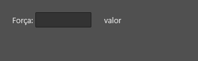
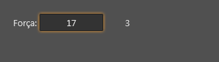
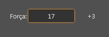
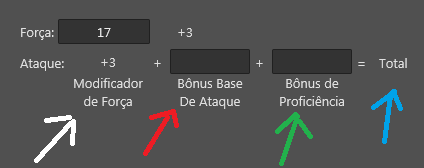
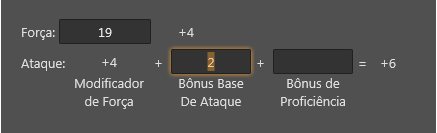

Criar campos calculados em fichas
Criar campos calculados em Fichas / Lua Forms.
Os campos calculados são feitos usando a tag dataLink para definir cálculos que devem ser executados quando houver mudança nos valores de alguns campos da ficha (NodeDatabase).
Tutorial 1 - Campo calculado simples
Neste tutorial, iremos fazer com que o label da interface abaixo sempre mostre o valor do cálculo "((campo forca) / 2 - 5) arredondado para baixo".
Importante: Note que o edit já está ligado ao campo "forca" da ficha/NodeDatabase
| \<?xml version="1.0" encoding="UTF-8"?> \<form name="frmFTeste"> \<layout left="20" top="20" height="25" width="200"> \<!-- Atributo --> \<label align="left" text="Força: " autoSize="true"/> \<edit align="client" horzTextAlign="center" field="forca"/> \<!-- Modificador --> \<label align="right" text="valor" width="70" horzTextAlign="center"/> \</layout> \</form> |
|---|

Passo 1 - Associar o label a um campo do NodeDatabase/Ficha
Vamos ligar o label a um campo chamado "modificadorDeForca":
| \<label field="modificadorDeForca" align="right" text="valor" width="70" horzTextAlign="center"/> |
|---|
Passo 2 - Criar uma tag dataLink
Vamos criar uma tag dataLink e ligá-la ao campo "forca" para que possamos associar um código LUA que será executado sempre que o campo "forca" for alterado.
| \<dataLink field="forca"> \</dataLink> |
|---|
Passo 3 - Criar uma tag event para tratar o evento "onChange" do dataLink que criamos.
| \<dataLink field="forca"> \<event name="onChange"> \</event> \</dataLink> |
|---|
Veja também: Tratando eventos do Lua Form
Passo 4 - Escrever o código LUA do cálculo
| \<dataLink field="forca"> \<event name="onChange"> sheet.modificadorDeForca = math.floor(((sheet.forca or 10) / 2) - 5); \</event> \</dataLink> |
|---|
Aqui realmente colocamos o código do cálculo. O que este código faz:
- Toda vez que o valor do campo "forca" mudar, atribui ao campo "modificadorDeForca" (àquele que o label foi conectado) o resultado de:
- o valor do campo "forca" (ou 10, caso ainda não tenha sido preenchido) dividido por 2, subtraído em 5 e arredondado para baixo (math.floor).

Passo 5 - Aprimorar o código do cálculo
| \<dataLink field="forca"> \<event name="onChange"> local mod = math.floor(((sheet.forca or 10) / 2) - 5); if (mod >= 0) then mod = "+" .. mod; end; sheet.modificadorDeForca = mod; \</event> \</dataLink> |
|---|
Colocamos uma condição (um "if") para adicionar o caracter "+" na frente do resultado se for positivo ou zero.

Código final do tutorial
| \<?xml version="1.0" encoding="UTF-8"?> \<form name="frmFTeste"> \<!-- Aqui começa o layout da ficha --> \<layout left="20" top="20" height="25" width="200"> \<!-- Atributo --> \<label align="left" text="Força: " autoSize="true"/> \<edit align="client" horzTextAlign="center" field="forca"/> \<!-- Modificador --> \<label field="modificadorDeForca" align="right" text="valor" width="70" horzTextAlign="center"/> \</layout> \<!-- Começa aqui os cálculos automáticos da ficha --> \<dataLink field="forca"> \<event name="onChange"> local mod = math.floor(((sheet.forca or 10) / 2) - 5); if (mod >= 0) then mod = "+" .. mod; end; sheet.modificadorDeForca = mod; \</event> \</dataLink> \</form> |
|---|
Tutorial 2 - Criar um campo calculado que depende do valor de outros 3 campos
Neste tutorial, vamos completar o tutorial 1 acima para adicionar um campo calculado chamado "Bônus de Ataque Corpo-A-Corpo", que será igual à soma dos seguintes campos:
- "Bônus Base de Ataque" (campo editável)
- "Bônus de Proficiência da Arma" (campo editável)
- Modificador de força (campo calculado).

Considere que:
- O texto (label) apontado pela seta branca está ligado ao field "modificadorDeForca"
- A caixa de texto (edit) apontada pela seta vermelha está ligada ao field "bonusBaseAtaque"
- A caixa de texto apontada pela seta verde está ligada ao field "bonusProficiencia"
- O texto apontado pela seta azul está ligado ao field "ataque"
Passo 1 - Criar uma tag dataLink que se conectará, ao mesmo tempo, aos 3 campos necessários para o cálculo:
| \<dataLink fields="{'modificadorDeForca', 'bonusBaseAtaque', 'bonusProficiencia'}"> \</dataLink> |
|---|
ATENÇÂO: Para ligar um dataLink à mais de 1 campo ao mesmo tempo, você deve usar o atributo "fields" do DataLink ao invés de "field" (Um está no plural, enquanto outro está no singular).
Passo 2 - Criar uma tag event para tratar o evento "onChange" do dataLink que criamos.
| \<dataLink fields="{'modificadorDeForca', 'bonusBaseAtaque', 'bonusProficiencia'}"> \<event name="onChange"> \</event> \</dataLink> |
|---|
Este evento será chamado sempre que qualquer um dos campos informados em "fields" sofrer alteração.
Passo 3 - Escrever o código LUA do cálculo
| \<dataLink fields="{'modificadorDeForca', 'bonusBaseAtaque', 'bonusProficiencia'}"> \<event name="onChange"> sheet.ataque = (tonumber(sheet.modificadorDeForca) or 0) + (tonumber(sheet.bonusBaseAtaque) or 0) + (tonumber(sheet.bonusProficiencia) or 0); if sheet.ataque >= 0 then sheet.ataque = "+" .. sheet.ataque; end; \</event> \</dataLink> |
|---|
Sempre que o valor de algum dos campos ligados mudar ("modificadorDeForca", "bonusBaseAtaque" ou "bonusProficiencia"):
- o campo "ataque" receberá a soma de:
- Valor do campo "modificadorForca" interpretado como número (o valor campo pode não ser um número válido, exemplo: "ABC") ou 0 caso não consiga interpretar como número.
- Valor do campo "bonusBaseAtaque" interpretado como numero ou 0 caso não consiga interpretar como número.
- Valor do campo "bonusProficiencia" interpretado como número ou 0 caso não consiga interpretar como número.
- Se o valor do campo "ataque" for maior ou igual a zero:
- Adiciona o caracter "+" na frente do valor.

Veja também:
- Interfaces Visuais (Lua Forms)
- Tag dataLink
- Orientações ao usar código LUA em Lua Form
- Lua Form e NodeDatabase
- Outros Tutoriais
Created with the Personal Edition of HelpNDoc: Free help authoring tool